医护人员用文件袋自制护目镜——湖北县镇乡村防疫战
原文链接 备份链接 医疗防护资源不足是常态，各地资源调配需平衡，“灯下黑”区域渐次光亮，但少数地区的疫情宣传依旧不到位 外地务工返乡者最担忧的问题是年后经济收入断流、地域歧视，担心节后可能无法返工 本文首发于南方人物周刊 文 | 本刊记 …

数据来源：腾讯新冠肺炎疫情实时追踪
截至2月4日上午7时16分，
全国新型肺炎确诊个案超过19700例。
距离武汉封城，已经过去了11天。
普通人被困家中，医护人员依然奋战在一线……
在抗疫的这十几天里，
每个人都在以自己的方式，
回应着这个世界。
一条征集的故事中，
武汉的摄影师、一线的医护人员
纷纷记录下了与这次疫情相关的难忘瞬间：
医生被捂得发白的手、
护士的女儿写下的一封告白信；
为了将5000个口罩、
200套防护服第一时间送往武汉，
一位北京人只身驾车36小时，全程2400公里……

北京人曹广臣驾车1200公里
将5000个口罩、200件防护服送往武汉
将物资亲自交给武汉荣军医院童主任

大年初二，武汉四医院西院
蔡姝的闺蜜，一位正在一线救人的护士
照片拍摄于该医院正式收治发热病人的第二天
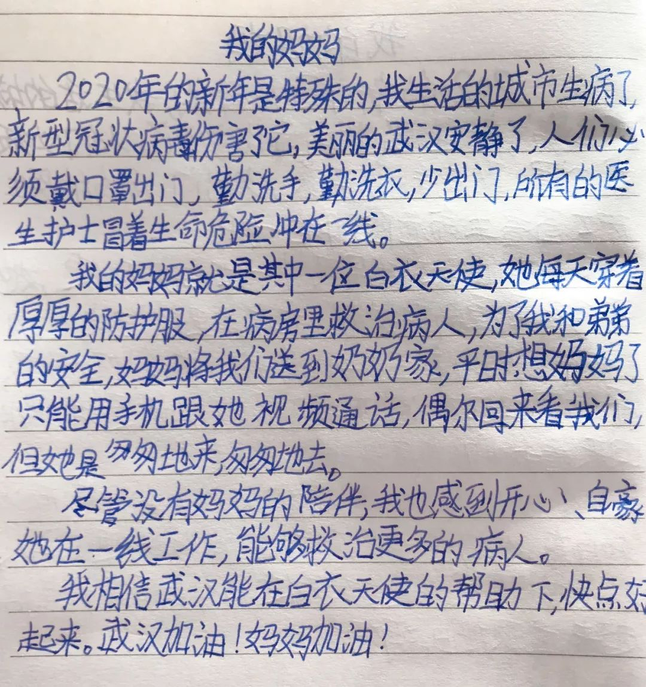
武汉四医院西院
一位护士的女儿写给她的告白信

一线护士被捂得发白的手
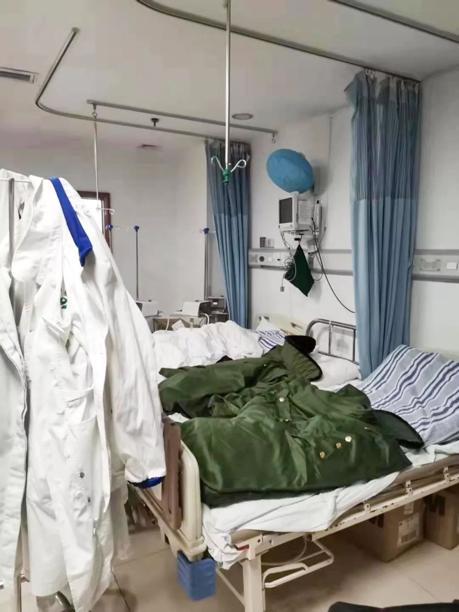
武汉四医院西院临时将一间病房
改为医护休息区
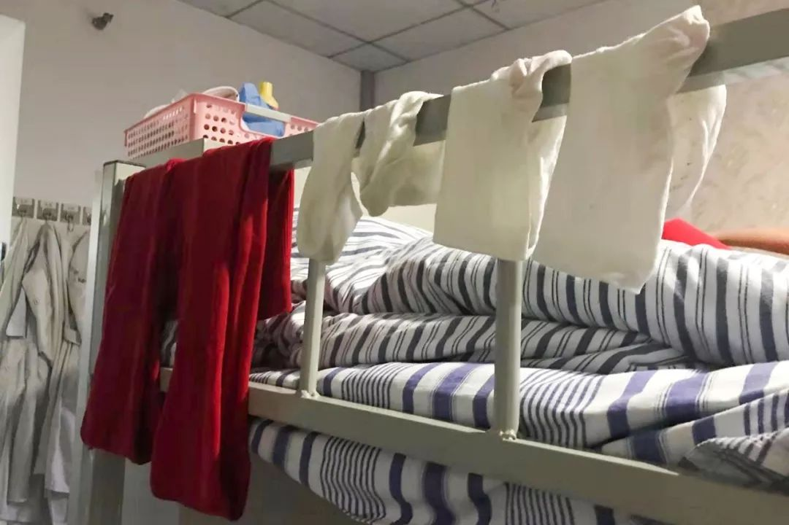
汉阳医院的护士，床头挂着白天不断汗湿的秋衣
怕感染家人，连续一周没有回家取过换洗衣物

1月下旬，武汉街头
当时新闻已报道，新型冠状病毒存在“人传人”的可能

封城后的武汉街头

除夕夜，湖北武汉
摄影师刘小光的家中
和在一线的医生父亲、远在老家的妻女视频通话

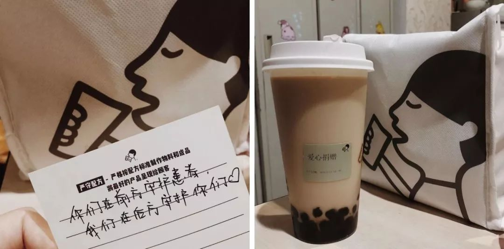
好心人为武汉四医院西院
免费提供的餐食、饮品
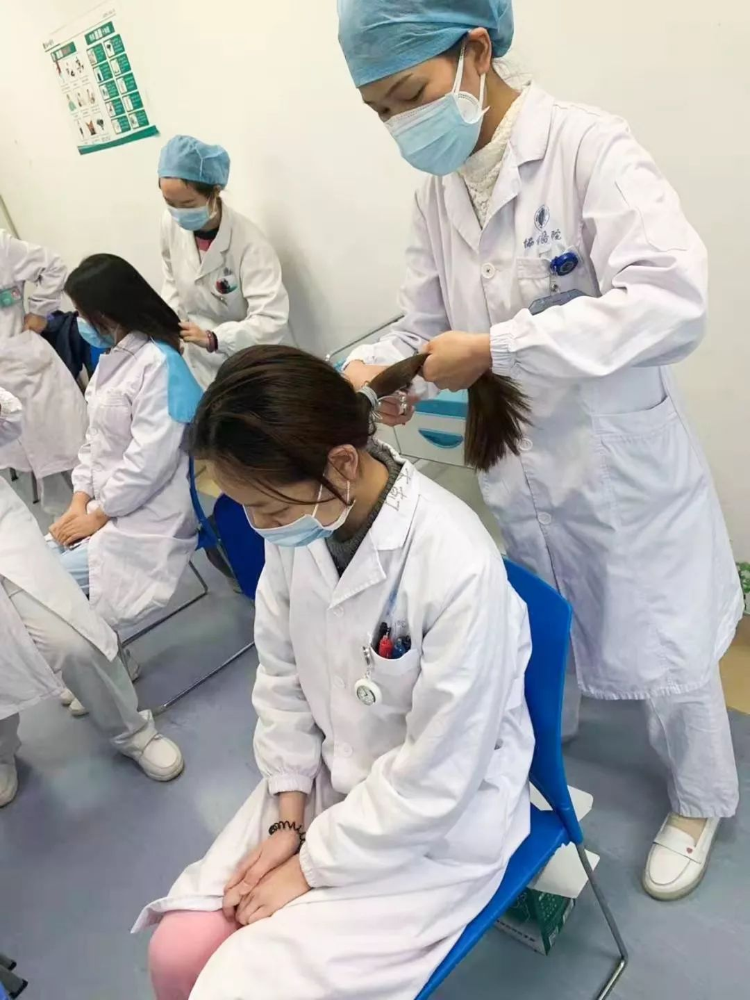

协和医院的护士，为穿防护服剪掉了长发
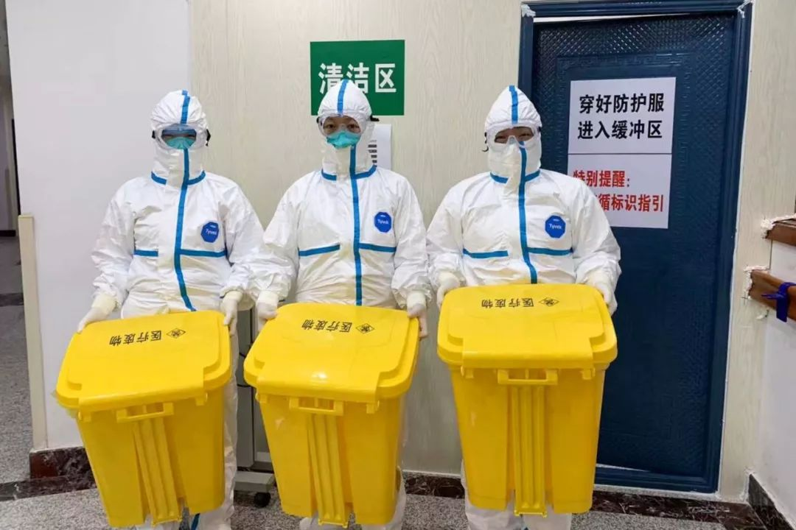
病人的生活垃圾，全靠医护亲自清理

1月28日，武汉兆瑞酒店
经营酒店的Moon家人正在接待来自广东的医疗队
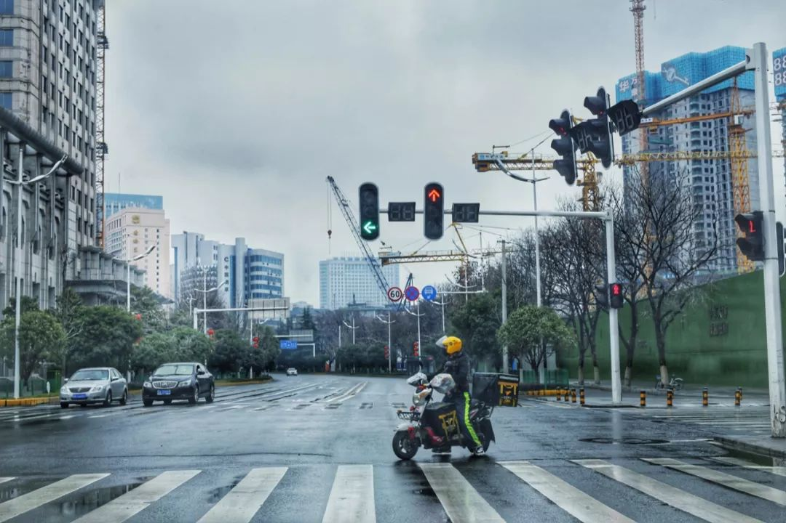
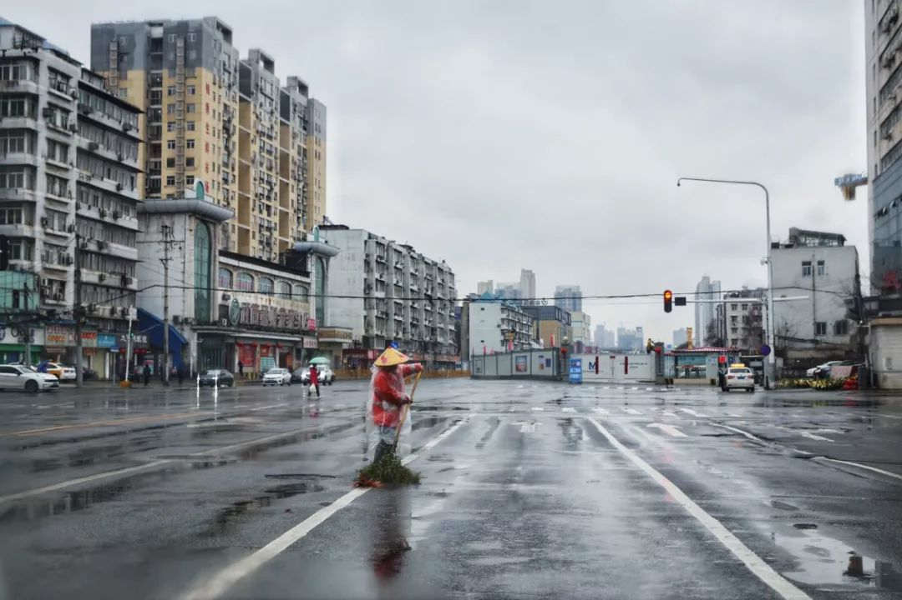
封城后的武汉街头
依然坚守在工作岗位的外卖小哥、清洁工

1月23日，湖北武汉
女孩Xlily的老公为外出购买食材，自制防护装备
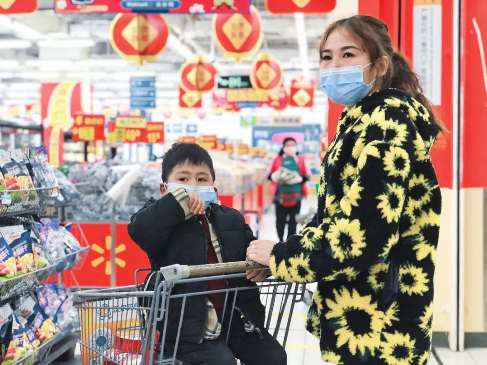
1月30日，湖北宜昌某超市
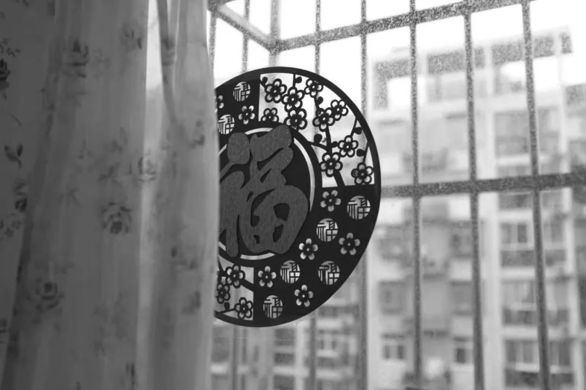
除夕夜，湖北武汉
照片拍摄于蔡姝的家中，武汉发布封城的第二天
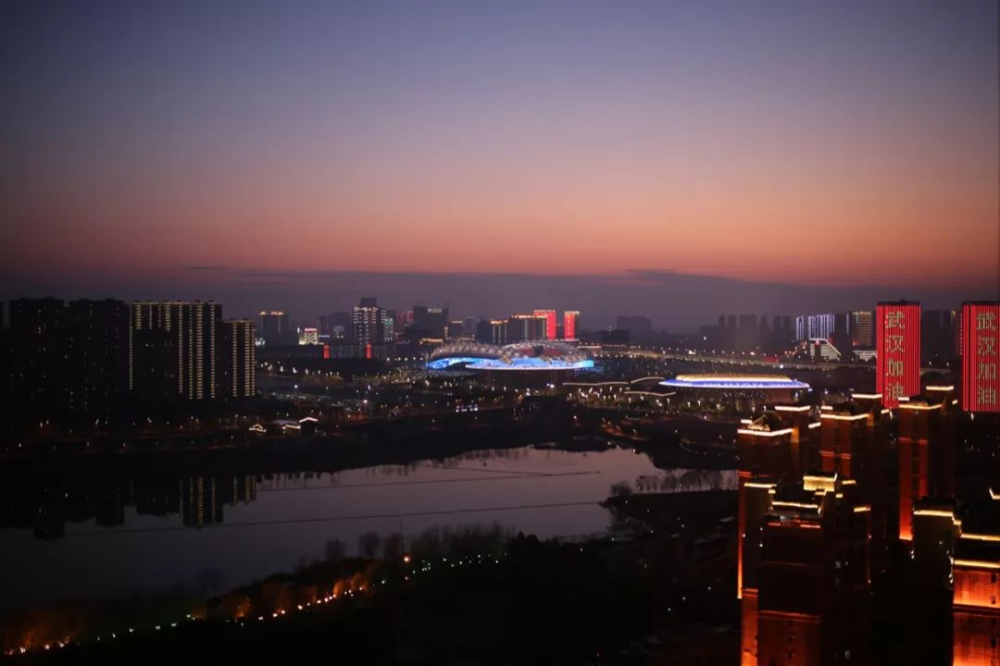1月31日晚，武汉体育馆的灯全部点亮
这种场景，曾只在军运会开幕式时发生过
很多人都说，2020年的春节过得太魔幻了。
短短十几天，
每个人都在这场疫情里经历着悲欢离合，
却也让彼此成为了可以互相温暖的亲人。
“似乎没有人知道，
疫情什么时候会被抑制，
但只有每个人都善待他人、共同努力，
我们才能赢。”
*编辑 * 张翔宇 ****
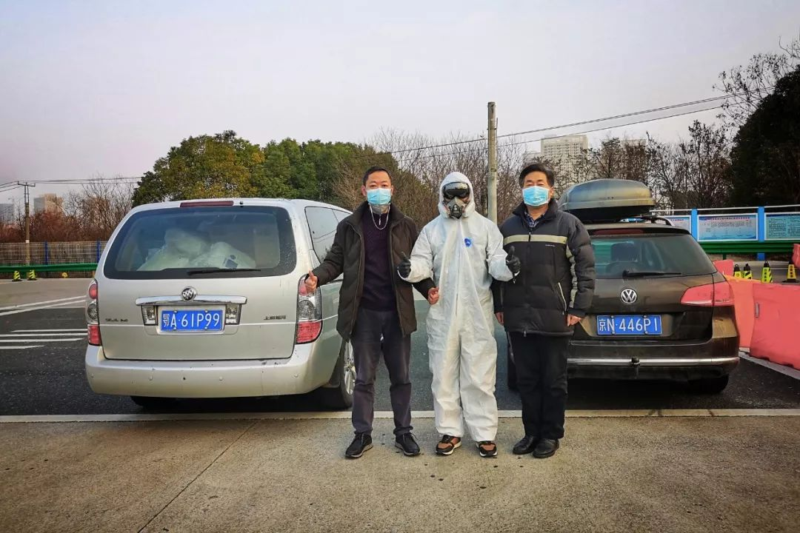
医院工作人员、北京人曹广臣和武汉荣军医院童主任
在府河收费站交接物资
开车36小时，2400公里，
一个北京人，
只身将5000个口罩、
200套防护服送往武汉：
疫情面前没有英雄
讲述者：曹广臣
38岁，品牌总监
📍北京
曹广臣今年38岁，是土生土长的北京人。目前，他正在北京的家中进行自我隔离。因为他只身驾车将5000个口罩、200套防护服送往了武汉，1月30号凌晨才返回北京。
从第一次看到钟南山院士的报道，他就开始密切关注这次疫情。但武汉封城的消息一出，才让他真正意识到事态的严重性。“那种感觉，第一反应就是记忆中的非典又一次卷土重来了。”

曹广臣和好友亲手分装的5000个口罩
曹广臣并没有亲属、家人从事医护的工作，却有几位医生朋友坚守在岗位上。没过几天，他们纷纷联系曹广臣借口罩，当时他的手里只有3个。“因为封城，不可避免地加剧了物资的短缺，武汉的朋友更是陷入了危难时刻。”
1月23日，他通过朋友辗转联系到吉林的一家口罩生产厂家，当即预定了5000个KN95口罩，计划以个人名义捐献给武汉。但情况紧急，又赶上春节假期，物流不能及时送达。为了让这些物资早日到京，除夕夜当晚他驾车赶往辽源，车开到北京边界时得知已经发货才折返。
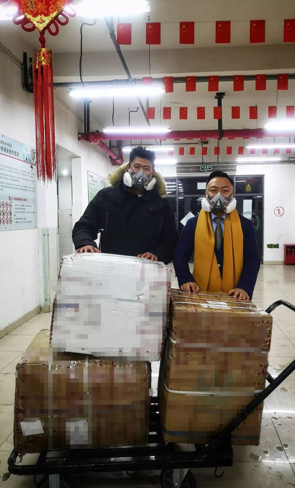
曹广臣（图右）和好友
1月27日晚10点，才将全部物资装车完成
1月28日，他反复给客服打电话，才协定可以在北京顺义的集散中心自提货物。“因为发货太匆忙了，口罩都没来得及装盒。快速打电话找了几个北京的朋友，一起在昌平进行了人工分拣、打包。后半夜才装车完成。”
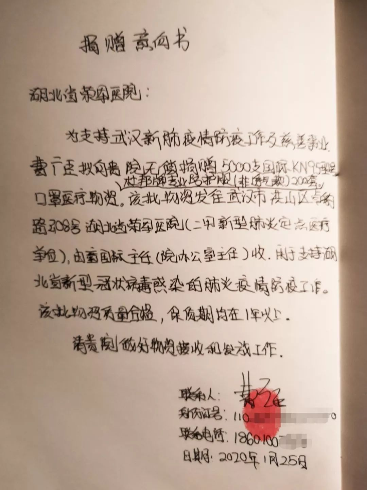
曹广臣手写的个人捐赠意向书
原本曹广臣计划从北京医疗快速通道发货到武汉，但快递告知一周才能到达。他决定先到保定取上防护服，再自驾到河南交付给相关人员。
因为春节期间没有地方打印，为了这批以个人名义捐出的物资能顺利地进入绿色通道，曹广臣亲手写了一张捐赠书，并按上了手印，以保证万无一失。

曹广臣在河南信阳服务站
但意外总是来得太快。在去河南的路上，曹广臣突然从武汉荣军医院童主任那里得知，物资无法在河南进行交接。
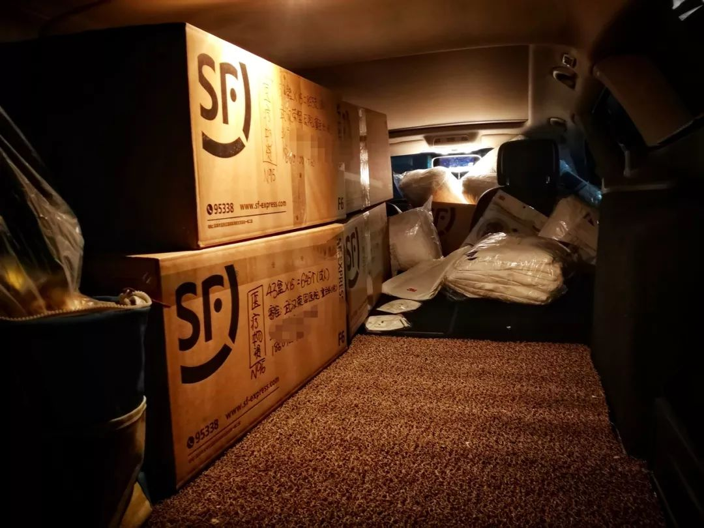

顺丰免费帮忙打包、装箱
“最初联系到的荣军医院，截止到1月24日，全院的口罩数量不足2000只，”为了第一时间满足武汉一线医护人员的需要，曹广臣决定亲自驾车前往武汉。“也在内心纠结过，但时效的重要性战胜了自我保护。”
很多人得知这个消息时，都劝他捐助给北京当地的医院，或者怂恿他转手倒卖，曹广臣都没有同意。“受人之托，忠人之事，我已经答应武汉医院了。”瞒着父母，他带着4000个成人口罩，1000个儿童口罩和200套防护服，只身驾车前往武汉。
时间线：
1月23日晚：计划进行实物捐赠；
1月24日中午：与红十字会及其他医院联系未果的情况下，主动联系武汉易局长帮忙联系到了武汉荣军医院，可进行个人捐赠；
1月27日：亲自到顺义自提货物、装箱；
1月28日凌晨：亲自前往顺丰总部沟通，但物品无法及时发货送达武汉，决定亲自前往河南。当晚，抵达保定增加200套杜邦防护服，当晚露宿车中；
1月29日凌晨：出发河南，途中得知无法在河南交割，当即决定驾车前往武汉；
1月29日15:00：进入湖北省界，下午17:00与武汉荣军医院的童主任交割完毕，返程回京；
1月30日凌晨：抵达河北衡水，测体温检查后放行；05:11抵达北京家中，开始自我隔离至今。
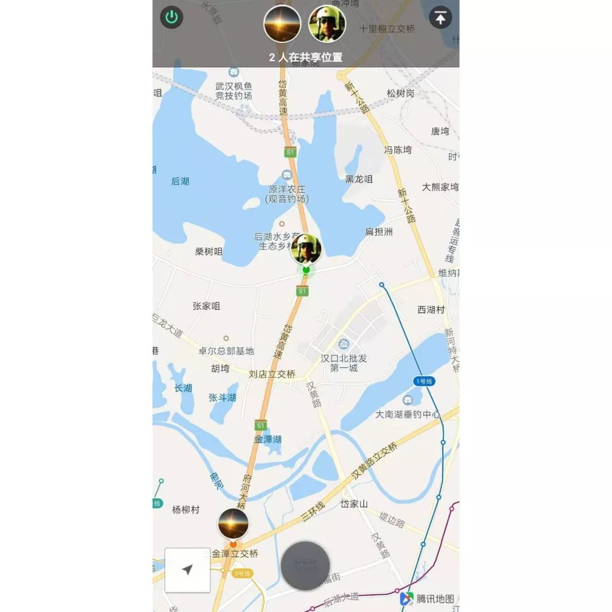线路导航图
临近交接点与童主任共享位置
从武汉返程北京，驾车12小时，全程1200公里。为了避免病毒传播，曹广臣只与衡水检查站的2人、扶沟加油站1人有过简单地交流。进京至今，没有和任何一个人见过面。
得知曹广臣要亲自给疫区送物资，很多人给予了他无偿地帮助：顺丰提供了很多免费的纸箱、滴滴赠送了一套防护服、武汉商务局副局长帮他与武汉医院取得了联系，并承诺如有需要可协调武汉市方面的快速通道；武汉荣军医院的童主任，积极与他对接……“如果没有他们，我无法顺利地将这些物资送达。”

 1月28日晚
1月28日晚
抵达保定取完200套防护服，当晚露宿车中
其实购买口罩的钱，曹广臣原本是打算改造房车用的。很多人不理解，甚至在几百人的微信群里公开辱骂他。但他只坚信一点，钱没了可以再赚，人没了就再也回不来了。是非在己，危难面前，不该论得失。
一条记者联系到曹广臣的时候，正是他从武汉返程回北京的路上。他说，亲眼所见的一切，没有大家想的那么严重。离武汉越近，越接近真相，内心越不怕。“比疫情蔓延更可怕的是恐慌的蔓延。”
现在物资送到了，反而一身轻松。朋友们纷纷发朋友圈，说他是英雄。曹广臣却说：“疫情面前没有英雄。我老曹只是一个在危急时刻，挺身而出的普通人。”
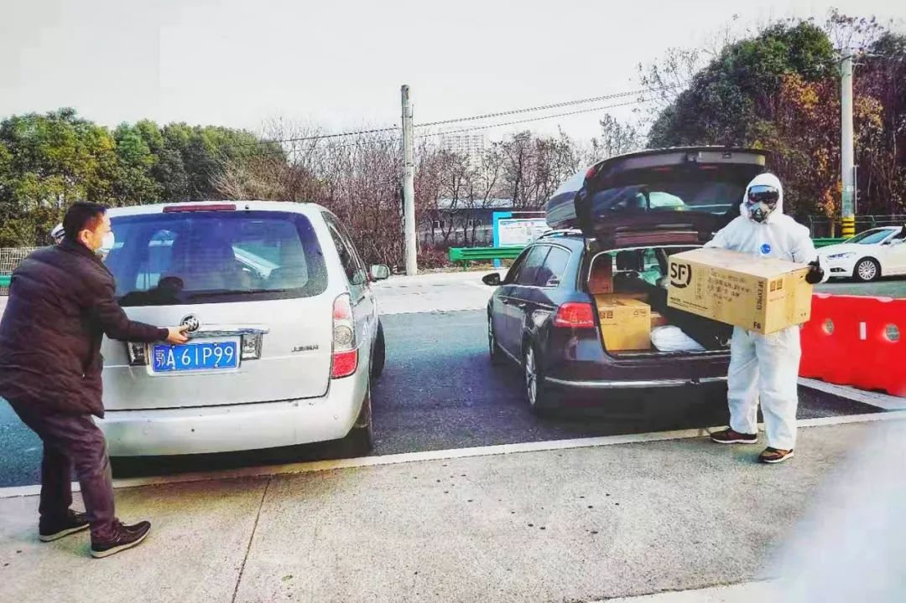
据曹广臣所说，目前一线的情况是：
1、武汉的基层非常需要医疗物资，可以主动联系相关医院，尤其是未公开求援的医院，等看到的那一刻，情况已经非常危急了；
2、交警等其他公职人员，依然带着一次性口罩，他们同样需要捐助。湖北周边及其他地区的医疗资源可能更加稀缺。现在，医疗物资比钱更能发挥作用。
我想对所有人说：“大家可以预防病毒，但不要歧视病患。武汉加油！湖北加油！中国加油！”
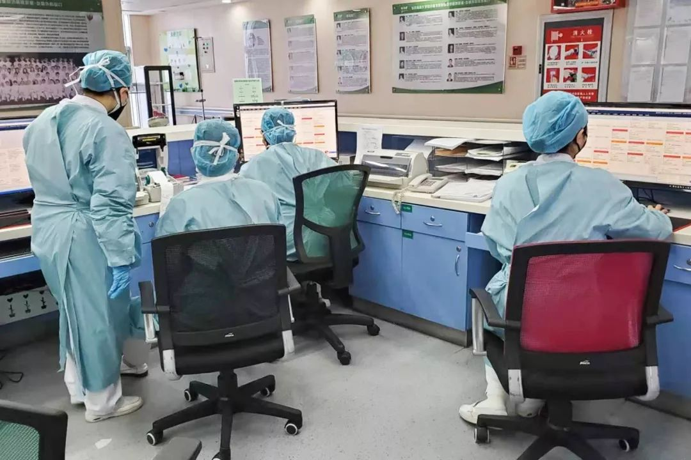
外科医生顶上一线：
连续工作累到睡地板、蜷柜子里，
是医护人员的常态
讲述者：赵医生
31岁，外科医生
📍武汉
赵医生是一名外科医生，今年31岁。此刻，他正在武汉的一家医院里，连续工作了好多天。
2019年12月底，武汉已有不少医院收治多例不明原因的肺炎患者。很多医院参考2003年SARS的经验，显然已经察觉到这种情况，不太正常。
但在武汉封城之前，大众对疫情的知晓和重视程度并不算高，不戴口罩、不做任何防护的人比比皆是。

救援的医护人员到达武汉
而外科医生，是在2020年1月中后期做为后备军顶到一线的。他所在的医院，从年前就已经让可以出院的病人先出院了，尽量减少住院人数。赵医生说：“在没有确认定点医院以前，发热门诊天天爆满，陆续有医护人员感染倒下。”
而真正确定定点医院是在1月初。虽然发热门诊人数有稍许下降，但到定点医院的人数却越来越多。感染科、呼吸科、急诊科等前期一线人员，是医院里最先感染的医护群体，后期连外科等防护较弱的科室也出现了陆续感染的情况。
建设火神山第一天
“只能说，在火神山和雷神山建设之前，医院确实没有办法保证所有疑似的病人都可以得到隔离、观察，和所有确诊病人能够住院就诊。毕竟床位太少，一线的医护也不够，这确实是真实的情况。”赵医生说。

封城后的武汉
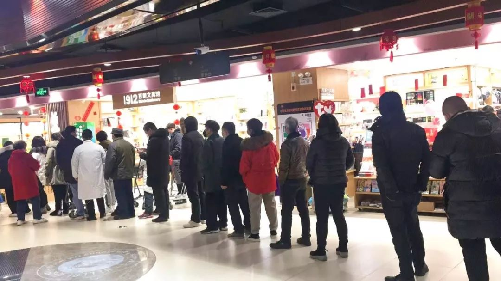
封城后，在超市排队购物的武汉人
封城以后，街道上几乎看不到行人、车辆了，所有人都开始戴口罩出门。武汉人从无所谓、到慌乱无助再到众志成城，以及所有人迅速进入抗击新冠肺炎的状态，也不过几天而已。
身为医生，他被亲友问到最多的5个问题是：
1、疫情的严重程度（传染性，病死率)？
2、疫情会持续多久？
3、如何防护新冠肺炎？
4、如何治疗新冠肺炎（药物、住院情况）？
5、武汉政府的行动、作为究竟是怎样的？
赵医生所在医院的分院是发热定点医院，能顶上一线的医护人员，全部都分批顶到了一线。很多医护人员纷纷结束休假，赶回武汉。

同济医院一线医护人员
从武汉医生的咬牙坚持，到从四面八方赶来了“援军”，心里也在不断地燃起希望。“这已经不是一个省、一个市的事情了，这是整个国家的战争。”

医护人员自制的防护眼镜
医护人员是高危人群，自己感染，包括家属感染是每天都会听到、见到的。隔离、检查、治疗，流程和大众是一样。
而现在经历的这些事情，是每位医护人员的日常。即使不是面对这次的疫情，在日常的工作中，连续工作累到睡在地板上、柜子里，都是医护人员的常态。
“我能告诉大家的细节，就是封城之后医院工作群里一声号召，所有医护都是毫不犹豫立刻回复，听从安排，没有一个人犹豫、退缩。”

救援物资到达同济医院
赵医生说，其实自己的心态没有太大的变化，因为见多了生死。今年感觉像没有过年一样，全部的心思都在抗击新冠肺炎上。
“需要提醒大家的是，在疫情面前，谣言非常多，如何正确认识所接收到的消息、看到的评论，是每个人需要辨别的事。”
除夕夜，湖北武汉
刘小光的家中
和在一线的医生父亲、远在老家的妻女视频通话
除夕夜，父亲在医院治病救人，
他拍下了一张最特别的全家福
讲述者：刘小光
33岁，家庭摄影师
📍武汉
大年三十，生活在湖北武汉的刘小光，家里的年饭“被”取消了。33岁的他，几天前度过了此生最难忘的一个除夕夜。
手机上扑面而来的，是各式各样的疫情报道。耳边还能依稀地传来救护车的鸣笛声。除夕夜那天，刘小光的家人各守一方。女儿和太太22号就回到了老家浠水，尽可能地避免被传染。他和母亲两人待在武汉的家里，一直不敢外出。
而他的父亲，已经在武汉的惠民医院奋战了十几天。除夕当天，三个手机同时开启，作为家庭摄影师的刘小光，记录下了这个瞬间。“这是一张最特别的全家福。”
现在，他们每天都和父亲视频，报平安。“我的父亲一直在一线，在我的眼里他是一名战士，他在为武汉拼命。”
刘小光说：“以前的我活着百无禁忌，现在我认为生命不再是个人的事情了。每位医疗工作者背后的家人，都在等着他们平安而归。”
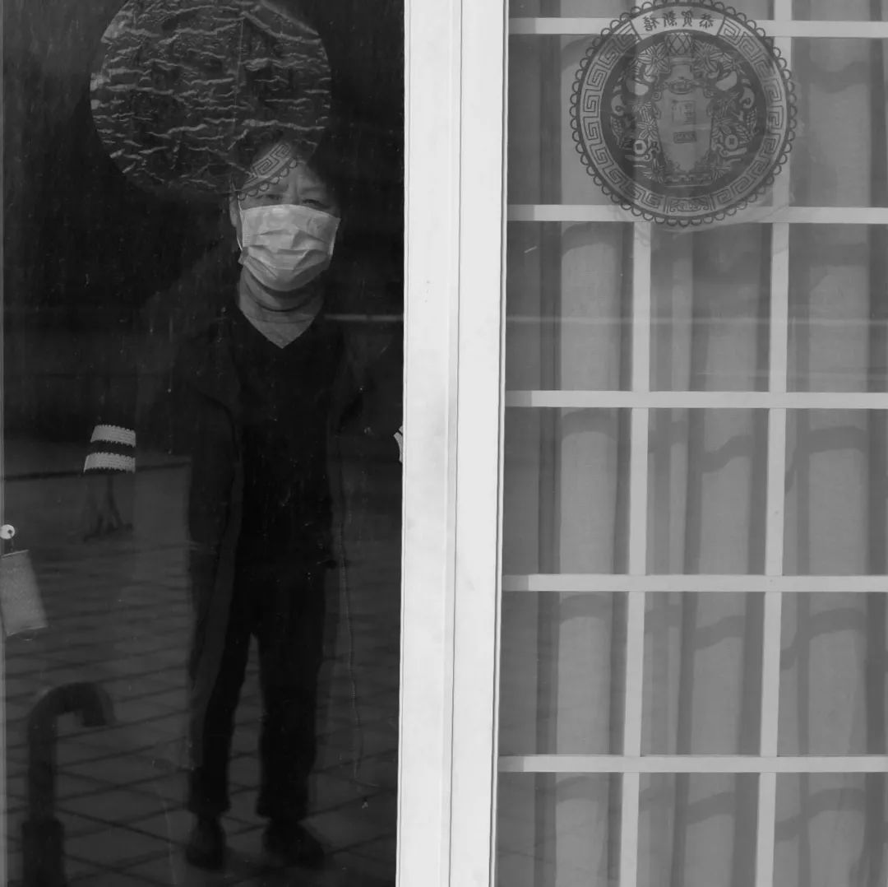
大年初二，湖北武汉
刘小光的母亲，与主动隔离的他隔窗相望

大年初四，湖北武汉
刘小光家中
疫情期间，刘小光突然发起了低烧。在这段时间，任何的病症都会令人惶恐，而发烧更是大忌。“上有老下有小，万一自己真的出事了怎么办？”所以刘小光主动在家里进行了自我隔离。为了安全，妈妈在家里也戴着口罩。
现在，整个城市像一座空城。“这座城市给了我太多的美好回忆，即便出现了疫情，我也无法离开它。”
小区里有确诊的邻居，每天在朋友圈里，他也能看到一些武汉同胞的家人离世的消息。武汉人总喜欢说“铆得搞” ，意思是要不就不搞，要不就好好搞，这或许就是武汉人的精神。

从对湖北人的采访中了解到，目前他们最关心的几个问题是：
1、现在感染的人数处于递增的状态，增长的势头什么时候可以停止？
2、治愈新型肺炎患者的药物和疫苗，什么时候能研制出来？
3、 如果短时间内这次疫情无法控制，湖北人何时能返工？
4、外省务工人员何时能离开湖北？湖北人又何时能真正地归家？
5、 湖北省的领导究竟能不能解决问题？
即便如此，他们依然以自己认为正确的方式，回应着这个世界，守护着这座城：
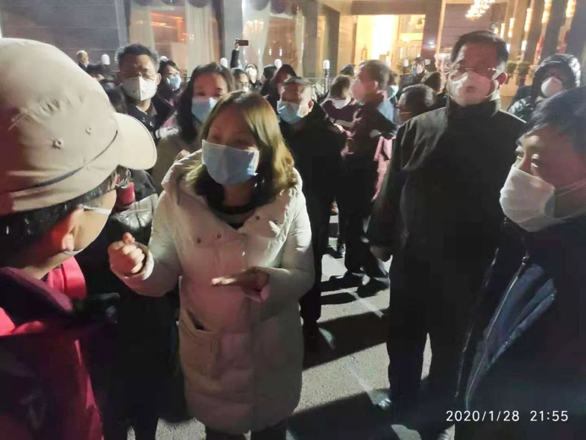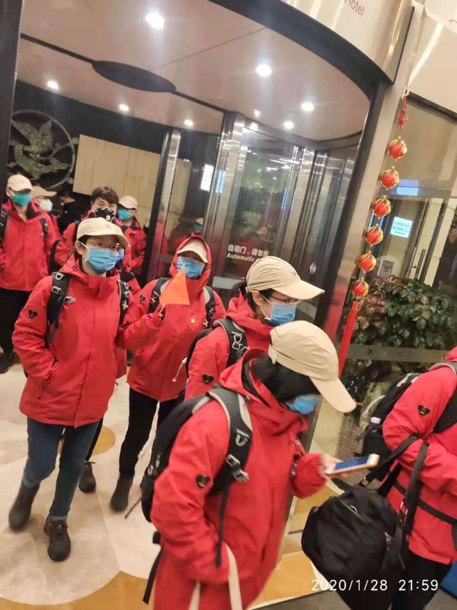
大年初四，武汉兆瑞酒店
广东医疗队入住
31岁的摄影师Moon，一直生活在武汉。今年，她并没有和父母一起吃年夜饭。大年初四的晚上，家人们在自己经营的酒店里，亲自接待了到武汉支援的广东医疗队。这是被困在这座城里的Moon一家，自愿做出的回馈。

 武汉医院里
武汉医院里
每天测量体温，也是他们最重要的工作之一
除夕夜的前一天，武汉发布了封城的消息，当时疫情的形势愈发严峻。武汉人蔡姝的亲人、朋友目前都很平安。但她有两个闺蜜是护士，一直奋战在第一线。
这个时候，护好自己也是她们工作的一部分。

1月28日，武汉汉阳医院
蔡姝的闺蜜，一位正在一线岗位的护士


蔡姝和两位在一线奋战的闺蜜微信群里
每天都会互报平安
她的两位闺蜜，一位在武汉汉阳医院，另一位在武汉第四医院西院。三个人有一个微信群，叫“闺蜜三人组”，之前总是聊些有的没的，现在，每天都是两位闺蜜一天的吃喝拉撒，以及身体情况。
特殊时期，精神上的陪伴和鼓励总能给人力量。
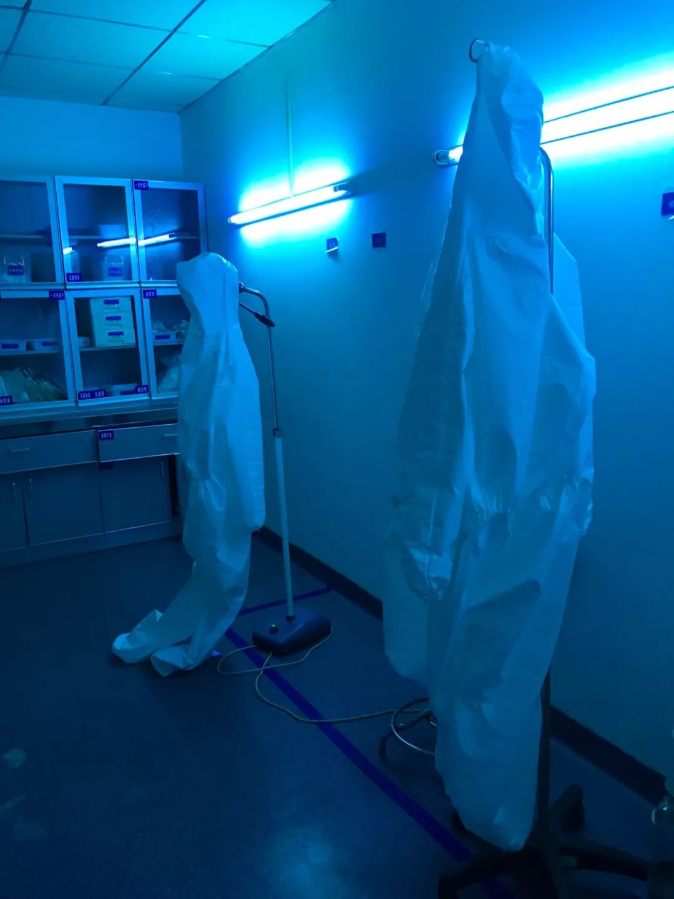
因为防护用具不足
将一次性防护服，用紫外线消毒后反复使用
两个人所在的医院，防护资源一直很紧张。武汉汉阳医院因为缺乏防护用具，将使用的一次性防护服，用紫外线消毒后反复使用。武汉四医院西院，花了2天改造出一间隔离病房，医生、护士只能在这里得到片刻的休息。

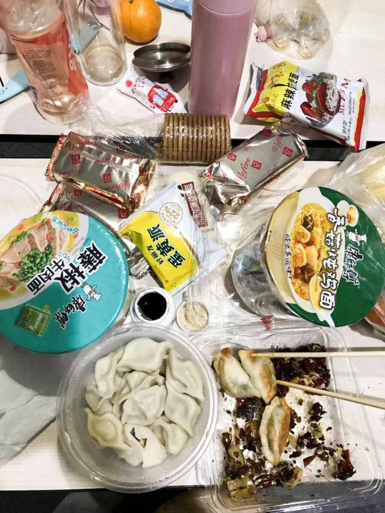
每天都会在群里看到一线医护人员发来的一些照片。医院的接待处，随时都会有陌生人送来的各式各样的食物。
没有人留下过姓名，都是留下东西转身就走。
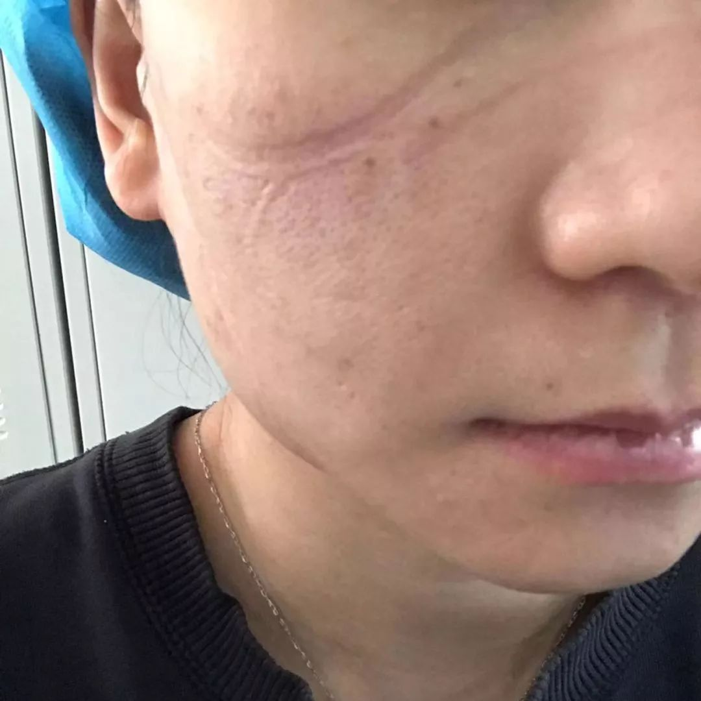
24小时穿着防护服，脸上、手上全是勒痕。为了避免频繁地上卫生间，她们不敢吃太多的食物，不敢多喝水，嘴唇全是裂痕。


除夕夜，湖北武汉
照片拍摄于蔡姝的家中，武汉发布封城的第二天
蔡姝的家里弥漫着紧张和恐慌的情绪，她站在家里阳台，看着窗外阴郁颓败的景色，觉得像极了自己当时的心情，便决定用相机记录下来。

蔡姝很爱这个“生了她、养了她”的城市。虽然它现在生病了，但所有人都在竭尽全力地治愈它。“人世间最大的幸福，是身边人的健康和平安。”

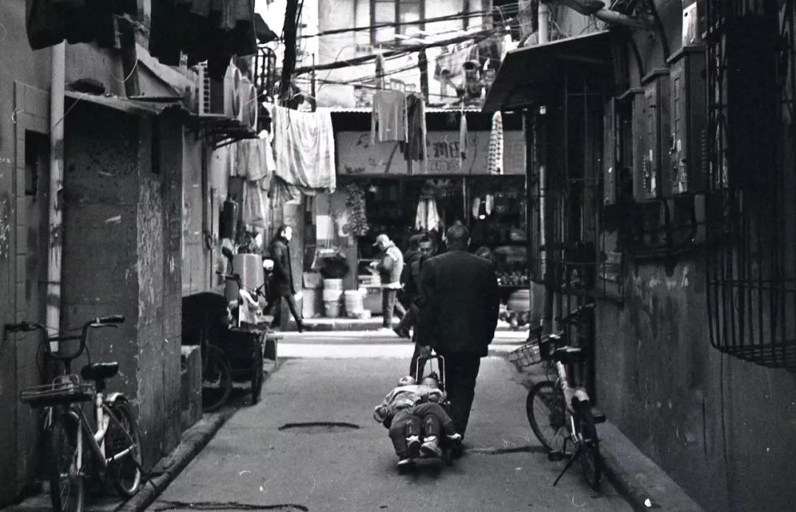
封城前的武汉
摩羯座的狮子，12月摄
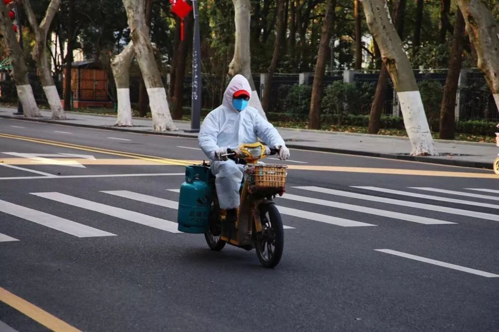
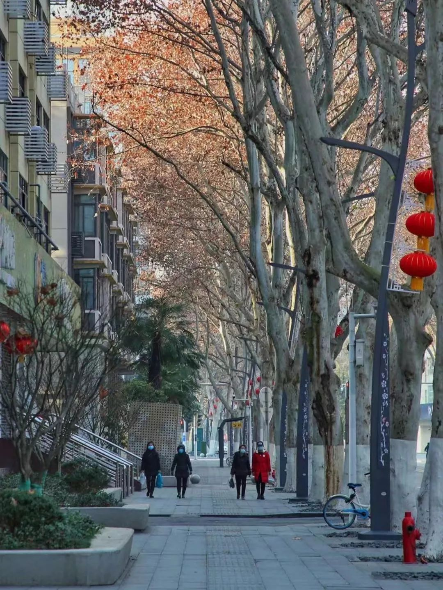
封城后，原本繁华的街道
只能依稀看到几个戴着口罩的路人
摩羯座的狮子是武汉的一名保险顾问，这些照片是他在武汉封城后，送太太上班的途中拍到的。
实在想不到2020年的武汉会是这样的，在家视频代替了走街串巷。看到依然坚守在岗位上送外卖的小哥、清洁工，依然会被感动到。
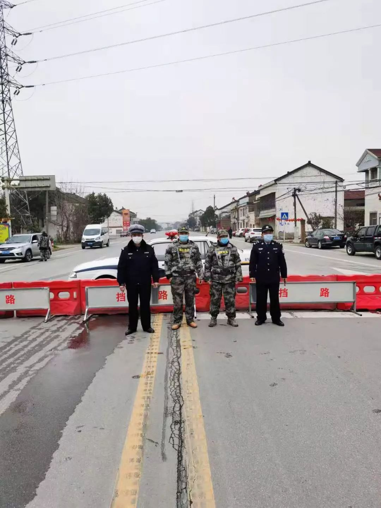湖北当阳值班的交警们
袁小文今年58岁了，他是湖北省当阳市的交通民警。为了检查并劝返过往的车辆，减少人员的流动、接触，大年初一，他依然坚守在高桥的疫情防控执勤点。
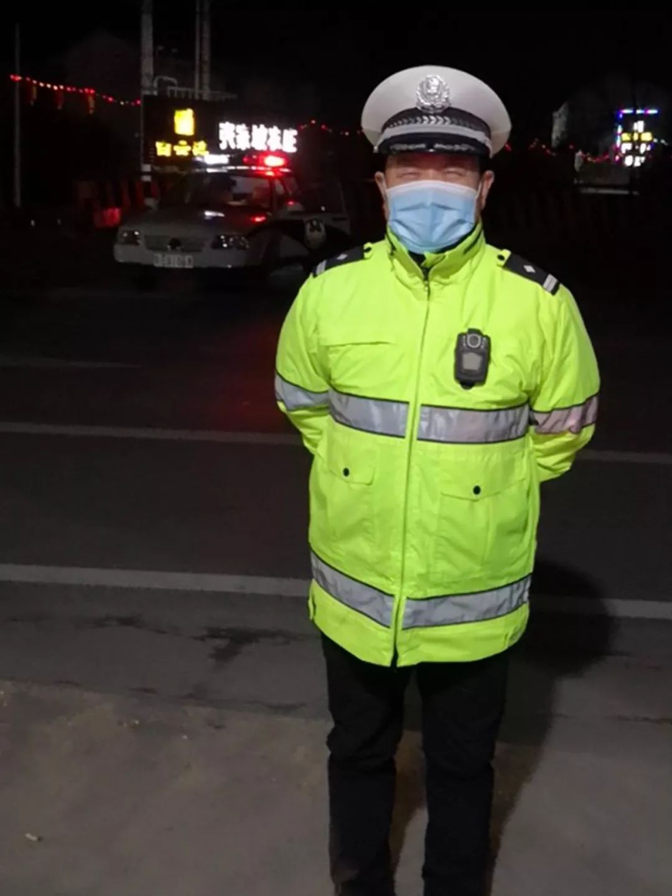
大年初一深夜，湖北当阳
袁小文在高桥的疫情防控执勤点执勤
这张照片是深夜12点拍的。当时当阳市已有2个确诊病例，所有人都不敢掉以轻心！“疫情防控是当前最重要的工作，作为公安民警，坚持在岗位上，是我们的职责所在！”
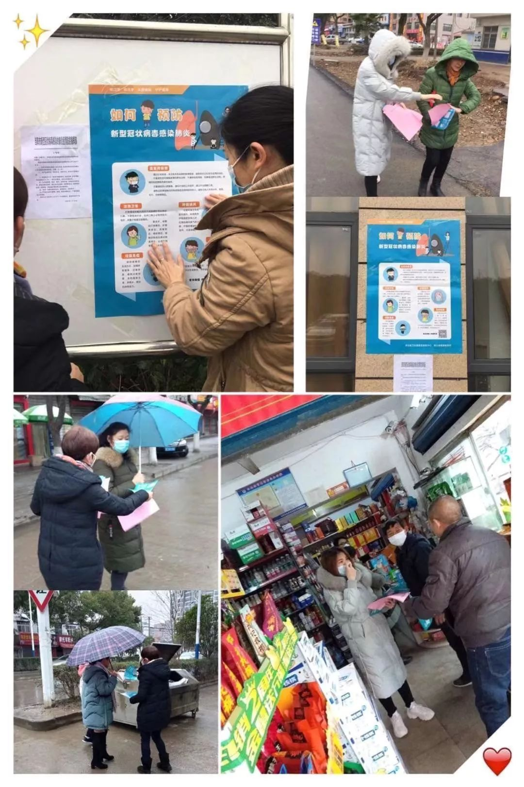
在社区宣传防疫工作
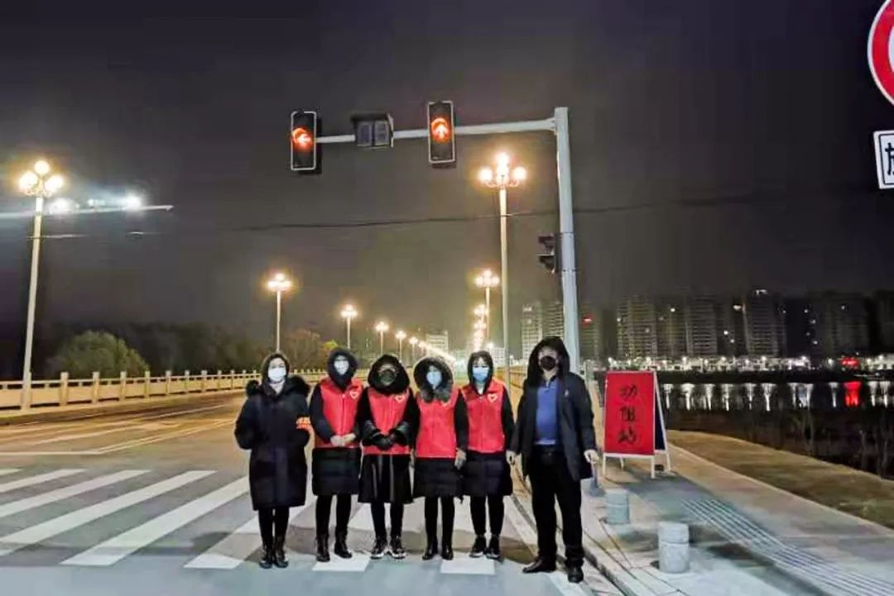
大年初三，湖北当阳
身为社区工作者的刘士梅，正在值班
46岁的社区工作者刘士梅从除夕开始，每天在街头劝阻大家不要在街头走动，并戴上口罩。
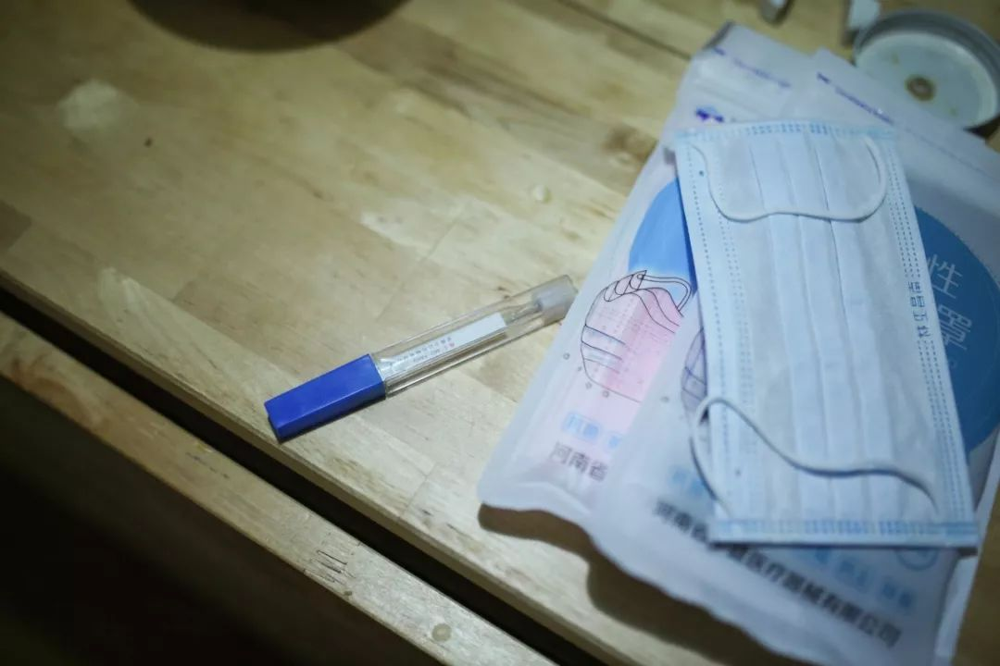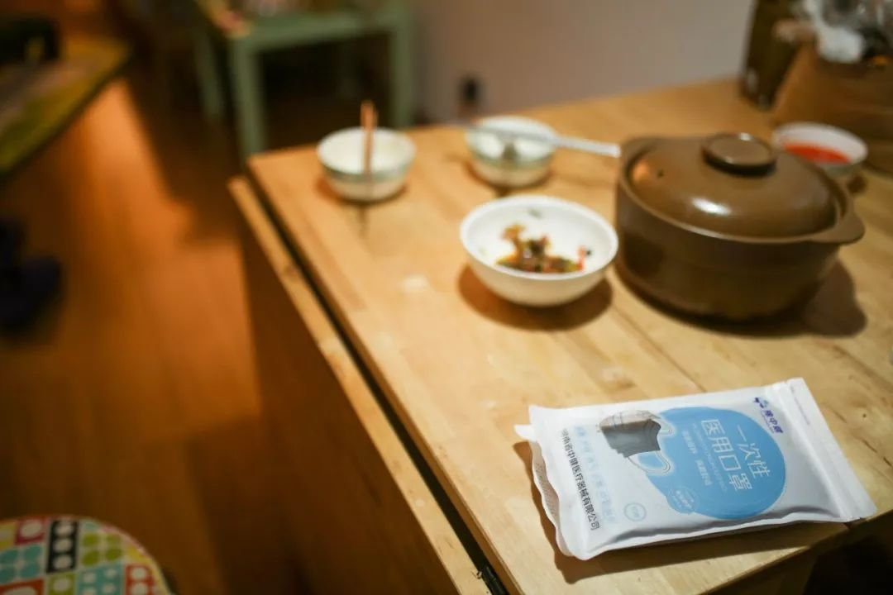
1月22日，湖北武汉
Xlily的家中
家庭摄影师Xlily和老公吃饭的时候，突然接到一个电话，是老公之前拜托朋友买的口罩到了。朋友亲自送到了楼下，老公拿到之后放在了桌角，Xlily拍下了这张照片。
今年过年，再也听不到妈妈唠叨、孩子的嬉闹声……只有夫妻俩个各自刷刷手机，偶尔交换下讯息，讨论讨论疫情。

1月23日，湖北武汉
Xlily的老公外出购买食材
因为家里的食材不足，Xlily的老公准备到楼下的超市采购。出门前，他用保鲜袋自制了一个面罩。
除夕夜，湖北武汉
Xlily和老公，在家打羽毛球

1月29日，湖北武汉
Xlily和老公，把家里的核桃全砸了
拼图左边是病毒，右边是一个人手拿着锤子
“我们终究会战胜它的”

Xlily和老公
1月20日退掉了回老家的车票
Xlily是一名家庭摄影师。她说自己不想忘记2020这个特殊的新年。
劫后她一定会更加好好生活，疼爱家人、朋友，好好保重身体，而这些照片就是最好的证明和提醒。
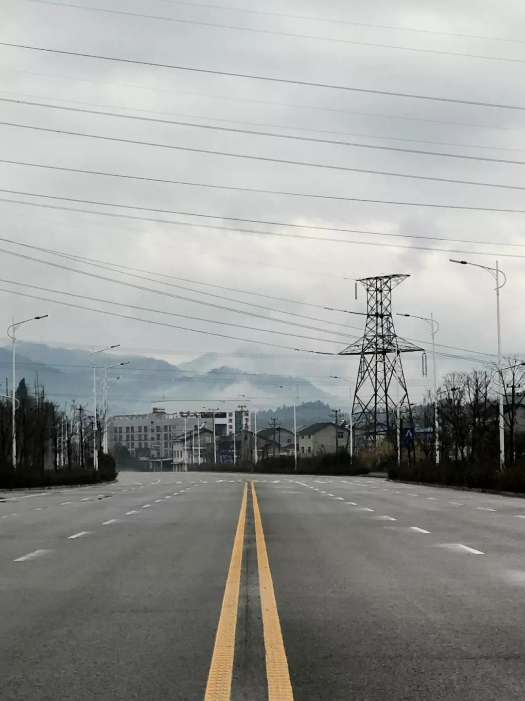
封城后的宜昌街景

街道之间设置的关卡
视频摄影师代超的家在湖北宜昌，1月19日刚到家的时候，整座城过年的气氛还很浓重，很多人都在开开心心地出门置办年货。“当时，只以为这是寒冬里最普通的一次流感。”
现在，宜昌的街道大部分时间依然空无一人。铁路、机场、公共交通是封禁状态，高速全部封路。就连县区内部的县与县、村与村之间都是封路的状态，设置的全是关卡，有专人把守。
 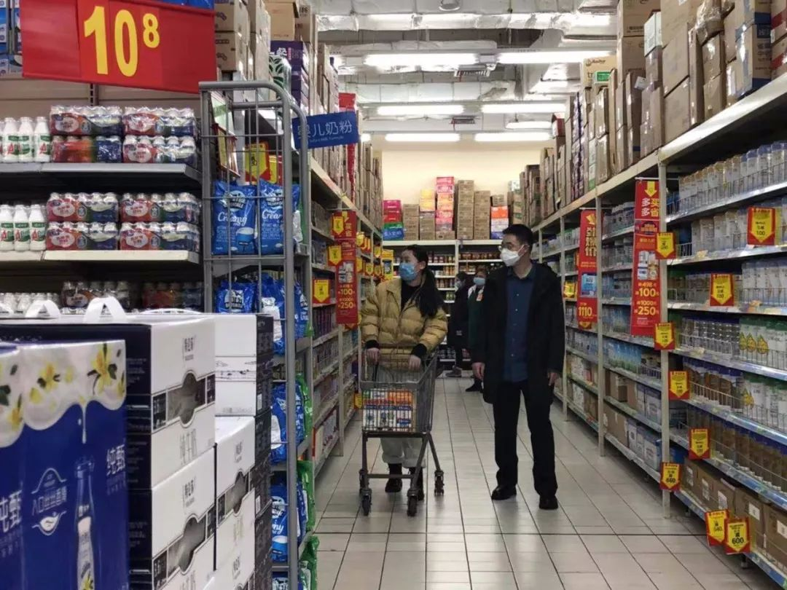
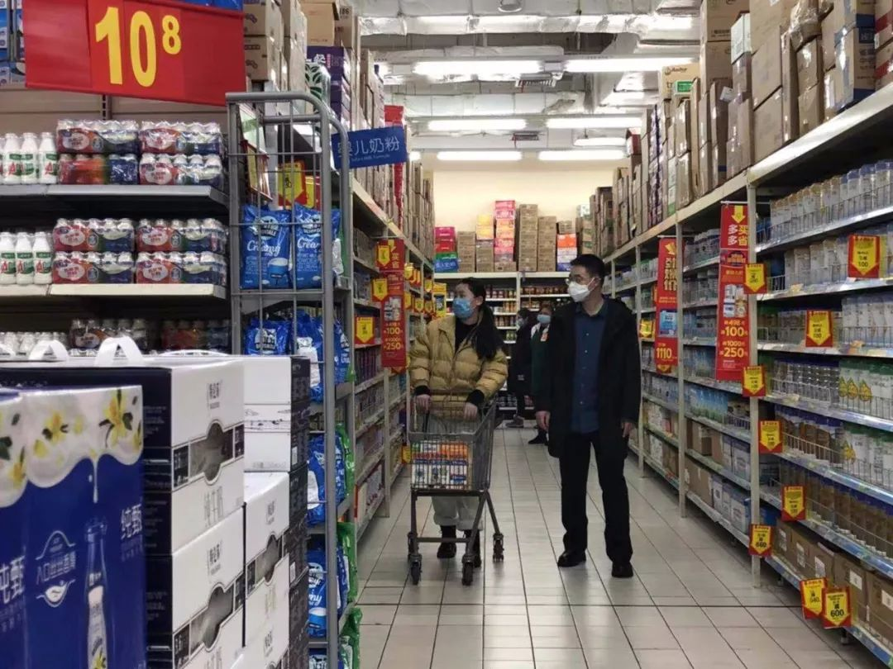
超市物品存量还算充足，但采购人员稀少
很多超市、药店开店营业的时间很短，一般下午3点左右就闭店了。“很多人都说这个年过得太魔幻了，跟世界末日一样……”超市采购也是提前列好清单，速战速决。
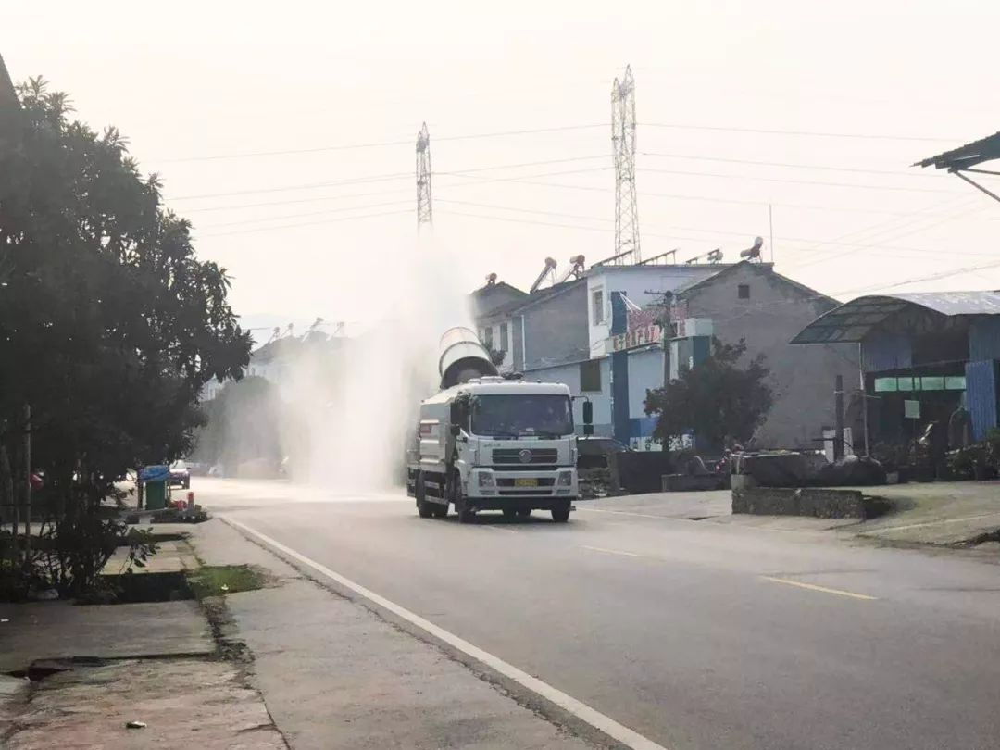
宜昌，日常消毒
广播会随时提醒大家疫情的发展状况，代超现在即使偶尔去超市，也是戴好口罩才出门，尽量跟人保持距离。“要认清我们是在抗病毒，而不是抗湖北人，不要对湖北人有任何歧视。”

湖北宜昌，庙咀
大学毕业后在上海工作的苗苗，只有春节才能回到家乡湖北省当阳市与父母团聚。
大年三十刚到宜昌东站，就得知因为疫情，初一凌晨六点开始，宜昌和当阳之间的国道、县道、省道可能会全部封锁。苗苗的父亲原本计划凌晨三点出城接她回家，却在开车路上，因为担心疫情变得严重，父亲决定先把她留在宜昌。
“万一疫情越来越严重，起码上海的医疗条件更好一些。”现在，苗苗与父母依然分隔两地。
 1月31日，湖北武汉
1月31日，湖北武汉
Xlily摄
借受访人Xlily的一句话：谢谢所有一线战士们的无畏和大爱！你们用自己的一己之力为武汉扛下了所有，也请你们顾好自己，还有很多人在期盼着你们回家。
武汉乃至湖北正在遭受罕见的疫情灾害，在这场战役中没有人能身处事外，请持续关注一条更多的后续报道，并提供力所能及的援助。谨此向所有在抗疫一线的“战士们”致敬！
鸣谢：曹广臣、赵医生、家庭摄影师刘小光、蔡姝、
Moon、摩羯座的狮子、家庭摄影师Xlily、代超、苗苗
* *
*
疫情依然严峻，针对以下人群，
我们正在寻找采访对象！
#我在疫情一线#
不论是您是在湖北还是全国其他地区，只要您是奋战在一线的医护人员、后勤补给人员、记者、患者或患者家属，我们希望听到您的见闻和最迫切的需求。
#我的武汉现场#
如果您正身在武汉，如果您愿意讲述在“封城”后的实地体验见闻，我们希望把它传递给更多人。
请通过以下方式联系一条编辑，我们期盼您的消息！
一条编辑部邮箱editor@yit.com
或直接在文章下留言。
请您留下所在地、职业，大致讲述您的见闻与故事，如合适我们将尽快与您取得联系，进行采访！
如有图片也欢迎一并发来。
▼

原文链接 备份链接 医疗防护资源不足是常态，各地资源调配需平衡，“灯下黑”区域渐次光亮，但少数地区的疫情宣传依旧不到位 外地务工返乡者最担忧的问题是年后经济收入断流、地域歧视，担心节后可能无法返工 本文首发于南方人物周刊 文 | 本刊记 …
原文链接 备份链接 这里是大学生的新媒体实验室 ∆ 轮到你了：这是武汉长江日报摄影记者陈卓参与武汉疫情报道的第16天，调岗一年后他被临时抽调参与一线报道。武汉封城前一天，他安顿好家中老小，封城当天和妻子一起返回武汉，开始过这个充满未知与风 …
原文链接 备份链接 新冠肺炎疫情下的2020年农历新年，被封在武汉这座城内的不仅有当地市民，还有数以万计的外来务工人员。他们没有选择返乡，而是选择成为这座城市的坚守者，继续维持城市系统的运转。一边忙碌，一边观察，他们亲历着武汉或宏大或细微 …
原文链接 备份链接 《战疫口述记》，是燃财经在新型冠状病毒肺炎期间推出的特别栏目，记录疫情亲历者的观察和感受。本文为第6篇，查看前5篇请点击《我和公司都快熬不住了》《节后返京，太太太南了》《我的“流浪”春节》《农村这样防肺炎》《我在武汉 …
原文链接 备份链接 封城已过去一周，在这个谈武汉人、湖北人色变的时候，我们想要好好看一看他们。今天我们挑选的几篇读者来稿，围绕着湖北的武汉和黄冈，讲述他们在旋涡和风暴中心的日子。他们有些住在城市，有些住在乡村和小镇。环境的不同给了他们不 …